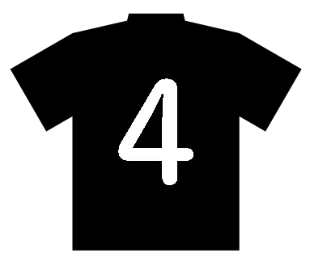
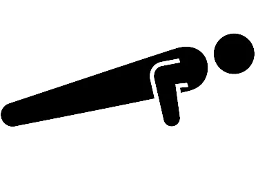
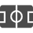

FW
半歩ずらしシュート(7mlc)
 : 目的
: 目的
狭いスペースで相手のブロックの前にシュートを打つ。
 : ステップ
: ステップ
①マーカーを三角形に並べる。
②斜め前にずらしてから素早くシュートを打つ。
 : ポイント
: ポイント
・ずらしてからすぐにシュートを打つ。
反転シュート(7mlc)
: 目的
ゴールを背にして相手DFが後ろにいることを想定し、反転や横にずらしてシュートまでもっていく。
: ステップ
①マーカーを三角形に並べる。
②ゴールと相手を背にした状態から、1フェイク（ボディフェイクや視線誘導）入れてから反転、シュート。（リバウンダーはなくてもよい。）
: ポイント
・相手を背負っていることを想定しているため、1フェイクは必ず入れること。例1）ボディフェイク：反転したい方向と逆に重心をずらし、それを反動に行きたい方向にターン。例2）視線誘導：行きたい方向と逆に顔を向け、相手の重心をずらし、行きたい方向にターン。
プルアウェイシュート(7mlc)
: 目的
MFからのスルーパスをプルアウェイの動きで受ける動作。
: ステップ
①マーカーを弧を描くように並べる。
②自分でスルーパスを出して、マーカーの弧に沿うように移動しダイレクトでシュート。
: ポイント
・プルアウェイの時に、バックステップではなくクロスステップで開く。
トラップ＆シュート（REGATE）
: 目的
目線がゴールから大きくずれた時に、素早く修正する空間認知能力の向上。
それに伴う、トラップとシュート精度の向上。
: ステップ
①ボールを上にあげ、2タッチ目でシュートしやすいところにトラップ。
②シュート。
: ポイント
・相手を想定して、トラップからシュートまでの時間を早くする。
ドリブル＆シュート（REGATE）
: 目的
カットインシュートにおける、身体操作。
それに伴う、トラップとシュート精度の向上。
: ステップ
①相手を想定したマーカーを置く。
②マーカーに向かってドリブルし、シンプルな1フェイクを入れてシュート。
: ポイント
・フェイクは相手をずらすだけのシンプルなものに。
・複数のカットインシュートのパターンを練習する。例1）相手をずらしてシュート：ドリブルのスピードは緩めで、内側に半歩ずらしてシュート。例2）スピードに乗った状態からシュート：切り込むスペースがある場合に、横に2、3タッチするカットインシュート。
マーカードリブルシュート（REGATE）
: 目的
マーカードリブルで細かいタッチを磨きながら、シュートまでのスムーズな動作を習得する。
: ステップ
①マーカーを3つ並べる。
②マーカーの間をドリブルし、シュート。
: ポイント
・マーカーの距離や角度を調整して、どんな状況でもシュートまで持っていけるようにする。
コーンドリブルシュート（REGATE）
: 目的
人間幅に近いコーンを置くことで、マーカードリブルよりも実践に近い形でトレーニングする。
: ステップ
①コーンを倒して3つ並べる。
②コーンの間をドリブルし、シュート。
: ポイント
・コーンの距離や角度を調整して、どんな状況でもシュートまで持っていけるようにする。
MF
ショートドリブルと切り返し（7mlc）
: 目的
ドリブルキャンセルの精度を高める。
: ステップ
①インサイドターン。（各10往復）
②アウトサイドターン。
③足裏ターン。
④クライフターン。
: ポイント
・ボールを間接視野でとらえられるように顔を上げて行う。
三角形ドリブルとターン（7mlc）
: 目的
DFからボールを隠してドリブル、ターンすること。
: ステップ
①マーカーを二等辺三角形に並べる。
②その周りを軸足バックでドリブルし、底角についたらマーカーから遠い足になるように切り返す（インサイド、アウトサイド、足裏、クライフターンの順で各10往復）。
: ポイント
・スピードに乗っても切り返せるように、進行方向に対して軸足バックでボールを運ぶ。（軸足バック：スペースがあるときにスピードに乗るドリブル。軸足リード：相手と対峙する直前にスピードを落とすドリブル。）
切り返しの連続（7mlc）
: 目的
タッチの正確さ。
: ステップ
①ジグザグにマーカーを並べる。
②マーカーの直前で45度切り返す。（インサイド、軸裏ターンで各3往復）
: ポイント
・体の向きと目線で相手をだますことを意識する。
空中のボールをトラップ＆ターン（7mlc）
: 目的
空中のボールをショートバウンドで方向転換する正確さ。
: ステップ
①マーカーを4歩間隔で正方形に並べ、各辺の中点から垂直に3歩外側にもマーカーを並べる。
②正方形の中でボールを頭上に上げる。
首を振って、1タッチで行きたい方向にトラップ。
③外側のマーカーをすべて回るまで繰り返す。
: ポイント
・ボールが浮いてる間に周りを見る癖をつける。
正方形ドリブル（7mlc）
: 目的
各方向に対するボール運び方を習得。
: ステップ
①5歩間隔をあけてマーカーを並べる。
②横方向はロールドリブル、前は軸足バック（マーカーに近い足）、後ろはボールタッチ（マーカーに近い足）でドリブルする。（軸足バック：スペースがあるときにスピードに乗るドリブル。 軸足リード：相手と対峙する直前にスピードを落とすドリブル。）
: ポイント
・方向転換を素早く行う。

DF

DF低弾道ロングフィード（Want The Ball）
: 目的
距離があるパスを出すとき、短時間で受け手へ届けられるような低弾道バックスピンロングフィードを習得。
: ステップ
①壁、ゴールなどに向かって蹴る。
: ポイント
・アプローチ：ボールに対して45度でアプローチすることで、蹴り足のスイングと腰を回すスペースを確保する。
・体と腕：ターゲットに対して肩と胸を開かせる。
・軸足：ボールの少し前に軸足を置き、膝を曲げる。
・蹴り足：足を寝かせてつま先が横に向くように蹴る。ボールの真ん中より少し下を蹴る。
・フォロースルー：軸足側に流す。
腹筋ヘッド（Smile）
: 目的
ヘディングの際の腕の使い方を習得。
: ステップ
①おしりをついて足を少し上げる。
②その状態でボールを投げてもらい、ヘディングをする。(20回)
③横向きでヘディング。（左右20回ずつ）
: ポイント
・ボールを叩くイメージでヘディング。
・腕を使って反動をつけることでボールに威力を伝える。
・横向きのヘディングは、ボールに近い方の腕を上げてバランスをとる。
膝立ちヘッド（Smile）
: 目的
ヘディングの際の上半身の使い方を習得。
: ステップ
①膝立ちでヘディングする。（20回）
: ポイント
・ボールが来る前に顎を引く。
片足上げヘッド（Smile）
: 目的
空中での体勢を習得する。
: ステップ
半身の片足立ちでヘディングする。
: ポイント
・ボールに近い方の腕を上げてバランスをとる。
ボールから遠い方の足で蹴るようにして反動をつける。
2タッチヘッド（Smile）
: 目的
その場で両足ジャンプするのか片足ジャンプで前に出るのか判断する。
: ステップ
①ボールを少し前に上げる。
②上がったボールをヘディングする。
: ポイント
・強いボールを返せるようにする。
GK
ハンドリング（Andy）
: 目的
ボールフィーリングと視覚追従能力の向上。
: ステップ
①膝立ちで壁に向かってボールを投げてキャッチ。
: ポイント
・ボールを掴みにいくのではなく、早めに形を作って迎えるイメージを持つ。
・スローインは両手行う。
・距離を変えて行う。
低姿勢ダイビング（Andy）
: 目的
低いシュートに対する基本姿勢を確認。
: ステップ
①ボールを2つ両横の少し前にセットする。
②膝立ちからダイビングキャッチ。
: ポイント
・3つの手（右手、左手、地面）を使ってボールを止める。
・ボールまで一直線にダイビングする。
ダイビング（Andy）
: 目的
膝立ちより実践的なダイビングの動作を習得。
: ステップ
①ボールを2つ両横の少し前にセットする。
②立った状態からダイビングキャッチ。
: ポイント
・胸を前傾させて飛ぶ。
・飛び込む方向の膝を曲げる。
ブロッキング（Andy）
: 目的
ブロッキングの姿勢を確認。
: ステップ
①両膝立ちの状態でボールをもってスタート。
②ブロッキング→スタートポジション を左右繰り返す。
: ポイント
・腕を前に、胸を張って、できるだけ遠くに足を伸ばす。
腹筋スローイン（Andy）
: 目的
体勢の維持、セービングのダイナミックさに必要な体幹、腹筋を習得。
: ステップ
①ボールを持ち、反動をつけて腹筋を行う。
②起き上がると同時に壁にスローイン、キャッチする。
: ポイント
・ボールを頭の後ろから投げる。
バウンドキャッチアップ（権田修一）
: 目的
セービング時の下半身動作の改善と苦手なセービング方向の克服。
: ステップ
①足を伸ばした状態で座る。
②地面にボールをバウンドさせ、タッチ上がりながらキャッチする。
: ポイント
・足を引く、右に流す、左に流すの３種類行う。
サイドシートセーブ（権田修一）
: 目的
セービングの基本動作を習得。
: ステップ
①マーカーを両横に置く。
②マーカーに向かってボールを投げてもらい、セーブする。
: ポイント
・マーカーより前でセーブする。
・腕を伸ばしてセーブする。
ステップ&キャッチ（権田修一）
: 目的
シュートモーションに対して敏感になること。
: ステップ
①マーカーを縦に並べる。
②サイドステップでマーカーを交わしていく。
③ボールを蹴ってもらいキャッチする。
: ポイント
・ステップの途中でもシュートモーションに入ったら止まる。・自分より前でセーブする。
ポジショニング（権田修一）
: 目的
横パスの可能性を想定したポジショニングの理解。
: ステップ
①ポストからポストまで弧を描くようにマーカーを配置する。
②45度の位置から左右シュート&セーブ。
: ポイント
・横パスの可能性を考慮し、シュートコースを狭めようと安易に前に出すぎない。・シュートモーションに入ったら必ず止まる。
ボールを使った腕立て（権田修一）
: 目的
肩甲骨の可動域を広げる。
: ステップ
①ボールをひとつ使い、片手ずつプッシュする。
: ポイント
・筋力トレーニングの目的を見直し、可動域を広げるメニューは必ず取り入れる。
 筋トレ
筋トレ
筋トレ
中学生年代の体づくり（JFA）
: 目的
体重を増やす。
目標BMIを設定する。
: ポイント
・体重増加とスプリントは相関が強い。
・各年代における筋力増強メニューを考える。
スクワットのフォーム（ガクトレ）
: 目的
お尻を使って地面に大きな力を加える。
: ステップ
①肩幅より広めで、ガニ股の状態を作る。
②スクワットを行う。
③自分の体重分の重りで太ももと地面が平行になれば次のステージへ。
: ポイント
・ワイドスタンスでガニ股。
・膝をつま先よりも外に向ける。
・脛骨直下で地面をとらえる。
・股関節から曲げていく。
・頭の後ろ、胸の後ろ、お尻の割れ目の3点が変わらない姿勢を意識する。
・肩甲骨が締まる手順。・首の少し下でバーを持つ。
スクワットジャンプ（ガクトレ）
: 目的
お尻を使って地面に大きな力を加える。
: ステップ
①しゃがみ切ったら、止まって反動を使わずに地面を蹴って跳ぶ。
②反動を使って跳ぶ。
: ポイント
・ワイドスタンスでガニ股。
・膝をつま先よりも外に向ける。
・脛骨直下で地面をとらえる。
・股関節から曲げていく。
・頭の後ろ、胸の後ろ、お尻の割れ目の3点が変わらない姿勢を意識する。
・肩甲骨が締まる手順。・首の少し下でバーを持つ。
ブルガリアンスクワット（ガクトレ）
: 目的
お尻を使って地面に大きな力を加える。
: ステップ
①膝くらいの高さの台につま先を乗せる。
②軸足が乗せている足よりも 5㎝ 前にある状態でスクワットをする。
: ポイント
・かかとを上げない。
・股関節から折りたたむ。
・膝が内側に入らない。
・背骨をまっすぐに。
スクワットにおける重量と回数設定（ガクトレ）
: 目的
キレを高める重量と回数設定。
: ステップ
①1RM測定（自分の100％を知ること）。
②回数とセット数を調整する。
: ポイント
・30％～60％の出力レベルでトレーニングする。
・1セット7回未満。
・セット間に2分以上休憩をとる。

体幹トレーニング

体幹トレーニングプランク（KOBAトレ）
: 目的
腹直筋（お腹の正面）、腹横筋（お腹の深層）、脊柱起立筋（背中の筋肉）を鍛えることで体幹の安定性、けが予防につなげる。
: ステップ
①プランクで10秒キープ。
②右足上げて5秒キープ。
③左足上げて5秒キープ。
④レスト10秒。
: ポイント
・腰を反らさない。
・片足を上げた時に逆の軸足でしっかりキープ。
サイドプランク＋足引き付け（KOBAトレ）
: 目的
腹斜筋（お腹の側面）、臀部（大臀筋、中臀筋）、股関節屈筋（大腿直筋、腸腰筋）を鍛えることで側面の体幹強化、股関節の可動性と強さの向上、体幹の回旋力強化をもたらす。
: ステップ
①サイドプランクで10回足を上げる。
②レスト。
③逆側も同様。
: ポイント
・骨盤を頭と足、一直線に。
・足を引き上げるときはおへその高さまで上げる。
ニートゥーエルボー（KOBAトレ）
: 目的
腹斜筋（お腹の側面）、腹直筋（お腹の正面）、股関節屈筋（腸腰筋、大腿直筋）を鍛えることで体幹の回旋力強化、股関節の柔軟性向上、バランスとコーディネーションをもたらす。
: ステップ
①3秒かけて5回肘・膝タッチ。
②同じ動作を早く5回。
③レスト。
④逆も同様。
: ポイント
・肘と膝をしっかりつける。
・息を「フッ」とタイミングよく吐く。
ニーアップ（KOBAトレ）
: 目的
股関節屈筋（腸腰筋、大腿直筋）、腹直筋（お腹の正面）大腿四頭筋（太ももの前面）を鍛えることでスピードと瞬発力向上、ランニングフォーム改善を促す。
: ステップ
①右膝を10回上げる。
②逆足も同様。
③左右交互に素早く10回上げる。
: ポイント
・頭がぶれないように体軸をしっかりと作る。
アジリティ
四つ這い（ガクトレ）
: 目的
股関節のすべり運動を意識することで、股関節の可動性が向上し、アジリティや方向転換の動作をよりスムーズにさせる。
: ステップ
①左脚が浮くまで右脚に体重を乗せていく。
②お尻のツッパリを消さないように体を後ろへ動かし、戻す。
③逆も同様。
: ポイント
・お尻の割れ目の上辺りに、水入りのコップが乗っているイメージ。
膝立ち（ガクトレ）
: 目的
股関節の可動域を広げ、臀部とハムストリングスを強化し、パワフルな動きを生み出す基盤を作る。
: ステップ
①左脚が軽くなるまで右脚に体重を乗せていく。
②股関節を曲げていく
③逆も同様。
: ポイント
・上体や骨盤は傾かない。
・股関節から曲げていく。
立ち（ガクトレ）
: 目的
立った状態で行うことで、膝立ちよりも広範囲の筋肉を鍛えることができ、特にハムストリングス、臀部、大腿四頭筋によく効く。また、体幹の安定性も強化され、股関節周りの柔軟性と可動性も向上する。
: ステップ
①左脚が軽くなるまで右脚に体重を乗せていく。
②股関節を曲げていく
③逆も同様。
: ポイント
・母指球（親指辺り）ではなく、脛骨直下（すねの真下の骨、くるぶしの下）に体重を乗せる。
スケータースクワット（ガクトレ）
: 目的
臀部やハムストリングスを効果的に鍛え、バランス感覚や股関節の柔軟性を向上させる。また、地面に足をつけずに動作することで、コアの安定性が強化され、体全体の連動性が高まる。
: ステップ
①自分が立つところに目印を設置。
②後ろに2歩、横に3歩の位置にマーカーを設置。
③片脚立ちでマーカーにタッチして戻る。
④逆も同様。
: ポイント
・横に伸ばそうとするのではなく、下に曲げて自然に届くようにする。
片脚立ちジャンプ（ガクトレ）
: 目的
脚力やバランス力を向上させることで瞬間的に大きな力を出す。
: ステップ
①片脚立ちでキープする。
②ジャンプして同じ姿勢に戻る。
③逆も同様。
: ポイント
・着地の瞬間ぶれないように、脛骨直下（すねの真下の骨、くるぶしの下）に体重を乗せる。・
ステップ＋片脚立ちジャンプ（ガクトレ）
: 目的
ステップを加えることで、より動的な動きとタイミングが求められ、方向転換やジャンプ後の安定した着地、片足での踏み込み動作に効果がある。
: ステップ
①両足でステップを踏む。
②一歩前にジャンプして片脚立ちで着地して止まる。(左右交互に)
③横方向にジャンプして片脚立ちで着地して止まる。
: ポイント
・着地の瞬間、膝がぶれないようにする。
膝抜き（ガクトレ）
: 目的
膝を柔らかく使い、足全体の衝撃を吸収しながら体のバランスを保つことで、ストップ＆ゴーの動作、ターンや方向転換、ジャンプや着地を効率よく行う。
: ステップ
①片脚立ちの状態でキープする。
②膝の力を一気に抜く。
③屈んだところで止まる。
④逆も同様。
: ポイント
・腰は反らせない。
ウォールプレス片脚スクワット（ガクトレ）
: 目的
股関節の柔軟性を高め、バランス能力や体幹の強化を図りながら、膝や股関節にかかる負担を軽減し、効率的なエネルギー伝達を習得すること。
: ステップ
①片脚立ち（壁と逆側の脚）の状態で手を壁につく。
②壁側に倒れて、股関節を後ろに曲げていく。
③逆も同様。
: ポイント
・膝の角度は最初と変えない。
ウォーミングアップ
股関節の動的ストレッチ（ガクトレ）
: 目的
内旋と外旋の動きは股関節の可動域を広げたり、下半身全体の動きに連動性が生まれることで、方向転換やストップ動作の改善をもたらす。
: ステップ
①片膝立ちになり、両手＋片足を横一列に置き、片足は後ろに伸ばす。
②その状態で膝を反時計回りに回す。（10回）
③時計回りに回す。（10回）
④逆も同様。
: ポイント
・なるべく大きく回す。
グルートブリッジ（ガクトレ）
: 目的
股関節の伸展や外旋に関与する大殿筋を強化することで、スプリントやジャンプ、切り返しや方向転換などのレベルアップを促す。
: ステップ
①膝を曲げた状態であおむけになる。
②おなかを膨らませた状態で重りを乗せる。
③その状態で上がるところまで上げて、ゆっくりおろす。（8回）
: ポイント
・足は少し広げて、お尻に力が入るようにする。・お尻の力が抜けないようにゆっくりとおろしていく。
・息を吸っておなかを膨らませながら上げる。
・限界まで上げる。
ストレッチ
股関節の動的ストレッチ（ガクトレ）
: 目的
内旋と外旋の動きは股関節の可動域を広げたり、下半身全体の動きに連動性が生まれることで、方向転換やストップ動作の改善をもたらす。
: ステップ
①片膝立ちになり、両手＋片足を横一列に置き、片足は後ろに伸ばす。
②その状態で膝を反時計回りに回す。（10回）
③時計回りに回す。（10回）
④逆も同様。
: ポイント
・なるべく大きく回す。
練習後、試合後、寝る前のストレッチ（ガクトレ）
: 目的
・血液循環を促すことで乳酸などの疲労物質を排出し、リカバリーを促進する。
: ステップ
①お尻のストレッチ1
②お尻のストレッチ2
③ハムストリング1
④内転筋
⑤ハムストリング2
⑥内旋
⑦肋骨周囲
⑧開脚
: ポイント
・ひとつの種目に30秒かける。
動体視力
アイムーブメントエクササイズ（清水真）
: 目的
目を動かしている筋肉を全方向にストレッチすることで、筋肉や神経の疲労を回復する。
: ステップ
①眼球を上―下、右―左、右上―左下、左上―右下、より目の順番に動かす。
②このセットを3~5回繰り返す。
: ポイント
・瞬きの減少やエアコン下でのトレーニングは、目の乾燥を促すため目薬を点したり、水分補給をしたりする。
ブリンクエクササイズ（清水真）
: 目的
ピント調節機能を回復させ、対象となるターゲットの距離を瞬時に判定する機能を向上させる。
: ステップ
①目を強く閉じて、5秒経ったら開く。×10回
②目を開いたときに眼球を上―下、右―左、右上―左下、左上―右下の順番に動かす。
: ポイント
・できるだけ強く目を閉じる。
ナーブエクササイズ（清水真）
: 目的
頭と首の付け根にある、目の機能につながる反応点を刺激することで、眼精疲労の回復や視力の調整、動体視力のレベルを高める。
: ステップ
①首の付け根を指圧する。
②このとき、眼球を上―下、右―左、右上―左下、左上―右下、より目の順番に動かす。
③指圧する場所をずらして再度行う。
: ポイント
・指圧する位置を外側にずらしていくとより効果的。
フィンガートレーニング（清水真）
: 目的
動くものを瞬時に判定し、正確にその動きをとらえる能力は、動体視力の追従性眼球運動をレベルアップさせる。
: ステップ
①視覚の外から両腕を動かして、人差し指を目の前でつける。
②徐々にスピードを上げ、横、斜め上、斜め下、右上－左横、左上－右横、右下－左横、左下－右横の順で行う。
: ポイント
・慣れてきたら片目ずつでも行う。
ビジュアルフィールドトレーニング（清水真）
: 目的
特に自分の背後の視野確保ができるようになることで、プレーの判断力が向上する。
: ステップ
①視線をまっすぐ前に向け、視界の端に指を映す。
②円を描くように回し、それが視界の端でしっかり捉えられるようになるまで行う。
: ポイント
・眼球は動かさず、間接視野で指をとらえる。
アコモデーショントレーニング（清水真）
: 目的
視力にも関係する毛様体を刺激することで、奥行き判定を正確にする。
: ステップ
①左右の眼球の前に親指を置く。②指を前後させ、その状態でキープして交互に指を数回見る。③指の前後を変える。
: ポイント
・近点調節（目の最も近くのものにピントを合わせる能力）距離を少しずつ短くしていく。（目に近い方の指をさらに目に近づけてピントが合うようにする。）
ビジョントレーニング（清水真）
: 目的
不規則に動くボールを目で追い、眼球の反応速度をアップさせる。スピードアップしたボールを追従することで視覚機能をイノベーションする。
: ステップ
①画面から10㎝程離れる。
②動くボールに合わせて眼球をスムーズに動かす。
: ポイント
・頭を動かさず、目だけを動かす。
ランスルートレーニング（清水真）
: 目的
文字や数字を目で追い、目の判定速度を高める。
: ステップ
①画面から10㎝程離れる。
②文字や数字を目で追っていく。
: ポイント
・頭を動かさず、目だけを動かす。
プレイヤートレーニング（清水真）
: 目的
左右で異なる情報を見て、視覚情報から瞬時に運動への協調を図り、見る、判断する、行動するまでの一連の流れを鍛える。
: ステップ
①左右のグループで異なる動きをしたボールを目で追う。
②パスを受けて赤くなった選手側の手を上げて、認知、判断、行動のプロセスを一体化させる。
: ポイント
・頭を動かさず、目だけを動かす。
チューブ
サイドプランク（KOBAトレ）
: 目的
片側に体重をかけることでコアが強化され、ジャンプやキック時の安定性が向上する。
: ステップ
①サイドプランクの状態で膝を地面に着けて安定させる。
②上側の脚を10回上げる。
③10秒レストを入れ、2セット目。
④逆側も同様。
: ポイント
・脚は伸ばす。
・肩が入らないように胸を張る。
・足を上げたときに、体がぶれるなら10回以下で行う。
瞬間的サイドプランク（KOBAトレ）
: 目的
ダッシュやストップ、方向転換など、瞬間的な動作とその後の安定した動きを向上させる。
: ステップ
①サイドプランクの準備状態を作る。
②瞬間的に脚を上げたサイドプランクを5回作る。
③逆側も同様。
④2セット目。
: ポイント
・上げるときに息を吐く。
・肩が入らないように胸を張る。
・わき腹とお尻で支える。
ニーアップ（KOBAトレ）
: 目的
膝を引き上げることで股関節屈筋や大腿四頭筋が鍛えられ、ダッシュやジャンプ、キック力を向上させる。
: ステップ
①片脚立ちの状態でじく脚を少し曲げる。
②脚を20回引き上げる。
③逆足も同様。
④2セット目。
: ポイント
・軸足と体幹の連動を意識する。
・脛骨直下（脛の下、くるぶしの下）に体重を乗せる。
サイドホップバランス（KOBAトレ）
: 目的
素早いサイドステップや急激な方向転換をサポートし、安定した動きの基礎をつくる。
: ステップ
①片脚立ちの状態を作る。
②脚を入れ替えて横移動し、キープ。×20回
③2セット目。
: ポイント
・脛骨直下（脛の下、くるぶしの下）に体重を乗せる。
・体幹を引き締めてバランスをとる。
ヒップリフト（ガクトレ）
: 目的
臀部とハムストリングの強化、腰回りや骨盤の安定性を向上させることでスプリント力やジャンプ力を高める。
: ステップ
①膝を上げて仰向けになる。
②腰を上げて、下ろす。
: ポイント
・足は肩幅より広げる。
・膝が内側に入らないようにする。
・一気にお尻を上げてゆっくり下ろす。
ヒップアブダクション（ガクトレ）
: 目的
お尻の外側にある中殿筋を強化することで骨盤の安定性が向上し、方向転換やダッシュに役立つ。
: ステップ
①横向きで寝る。
②脚を一気に高く上げゆっくり下ろす。
③逆側も同様。
: ポイント
・脚を横に一気に高く上げ、ゆっくり下ろす。
ヒップリフレクション（ガクトレ）
: 目的
腸腰筋や大腿四頭筋など、股関節を前方に引き上げる股関節屈筋を強化することで、ダッシュや急加速、キック時の動きがスムーズになる。
: ステップ
①足先にチューブを引っ掛ける。a
②股関節を一気に上げる。
: ポイント
・足首はしっかり曲げて太ももを高く上げる。
スクワット（ガクトレ）
: 目的
大腿四頭筋、ハムストリング、臀部、ふくらはぎなど下半身全体の筋肉を鍛えることでスプリント力やジャンプ力、安定性が向上する。
: ステップ
①脚を肩幅より広げる。
②地面と平行になるまで股関節を曲げる。
: ポイント
・脛骨直下（すねの下、くるぶしの下）に体重を乗せる。
・膝が内側に入らないようにする。
・膝ではなく股関節から曲げていく。
スクワットジャンプ（ガクトレ）
: 目的
瞬間的に出力することでスプリント、方向転換、ジャンプの高さなどダイナミックな動作を改善する。
: ステップ
①スクワットの状態を作る。
②なるべく高くジャンプする。
: ポイント
・なるべく高くジャンプする。
・着地でフラフラしたり、膝が内側に入ったりしないようにする。
サイドホップ（ガクトレ）
: 目的
横方向の動きを素早く行うことで、反応速度や俊敏性をお向上させる。
: ステップ
①片脚立ちの状態を作る。
②横にジャンプし、少しキープ。
: ポイント
・横に遠くに連続でジャンプする。
・着地でフラフラしないようにする。
反動ありサイドホップ（ガクトレ）
: 目的
反動を利用して飛ぶことで、下半身の瞬発力を強化し、スプリントやジャンプを効率的にする。
: ステップ
①片脚立ちの状態を作る。
②横にジャンプし、少しキープ。
③その場で少しジャンプし、横にジャンプ。
: ポイント
・慣れるまでは1回1階正確に行う。
フロントモンスターウォーク（ガクトレ）
: 目的
臀部や大腿四頭筋、ハムストリングス、内転筋など、下半身の筋肉を鍛えることにより、スプリントやジャンプ時のパフォーマンスを向上させる。
: ステップ
①スクワットの1番しゃがんだ状態を作る。
②そのまま前後に歩く。
: ポイント
・膝が内側に入らないようにする。
サイドモンスターウォーク（ガクトレ）
: 目的
素早い動きや方向転換のための筋力とコーディネーションを鍛えることができ、試合中の敏捷性を向上させる。
: ステップ
①スクワットの一番しゃがんだ状態を作る。
②そのまま横に左右に歩く。
: ポイント
・膝が内側に入らないようにする。
食事
試合前の食事（ガクトレ）
: 目的
試合前に適切なタイミングで糖質を摂ることで、体力・集中力の維持や疲労感の軽減に繋がる。
: ステップ
①6：30 起床後 白湯（人肌～60℃）
②7：00 食べやすい糖質 ごはん、うどんなど＋フルーツ
③9；00 カステラ、ようかん、おにぎり
④10：00～：30 バナナ、ゼリー
⑤11：00 キックオフ
: ポイント
・様々な種類の糖質を数回に分けて摂る。（単糖類と多糖類の消化・吸収の差による即効性と持続性のバランス）
体重を微増し続ける食事（Sprint & Conditioning）
: 目的
トレーニングからの回復を促し、筋肉量・筋力UPさせる食事方法を覚える。
: ステップ
①自分の体重を測る。
②1週間で【体重の0.25~0.5%】増加すべき目標体重を計算する。
計算方法：・0.25%増量→体重kg×1.0025 ・0.5%増量→体重kg×1.005
③1週間で増やすべき体重を×4して1か月で増やすべき目標体重を設定する。
目標体重 計算
: ポイント
・パフォーマンスの向上が感じられる範囲で、体重を増やしていくorキープできるくらいのエネルギーを摂取していく。
・体重を増やすことが目的になり、暴飲暴食するのはNG。
タンパク質を体重1㎏あたり2g摂る（Sprint & Conditioning ）
: 目的
トレーニングで損傷した筋繊維の修復と、新しい筋肉の生成を促進する。
: ステップ
①自分の体重を測る。
②体重（kg）×2（g）をして一日で必要なタンパク質量を計算する。
③算出したタンパク質量÷食事回数（一日3食なら3）をして1食あたりに必要なタンパク質量を計算する。
: ポイント
・1食、手のひら1つ分のタンパク質を摂るように意識する。
エネルギーは炭水化物から多めに摂取（Sprint & Conditioning ）
: 目的
運動前のエネルギー供給だけでなく運動後の筋肉修復に必要なエネルギーともなる炭水化物を摂取する。
: ステップ
①必要なタンパク質量を確保する。
②必要な脂質量を確保する。
③体重がキープor微増するようタンパク質を摂る。
: ポイント
・運動のタイミングに合わせた、適切な炭水化物の摂取を心がける。

戦術理解

戦術理解プレーモデルとは（岡田メソッド）
: ポイント
・プレーモデル＝プレーの原則を体系化したもの
（共通原則＞一般原則＞個人とグループの原則）
・攻撃：Progression
(ボールを保持しながら、積極的にゴールに向かう。)
・守備：Proactive
(主体的にアクションを起こしてボールを奪いに行く。)
共通原則：「4つの局面」とプレーの目的（岡田メソッド）
: ポイント
・攻撃（Attack）
（①ゴールを決める。②ボールを前進させシュートチャンスを作る。③ボールを保持する。）
・攻→守（Ball Loss）
（①素早くボールを奪い返す。②相手の攻撃を遅らせ、守備の態勢を整える。）
・守備（Defense）
（①ボールを奪う。②自由を与えずに制限を加える。③ゴールを守る。）
・守→攻（Ball Get）
（①相手の守備の態勢が整わないうちに攻める。②攻撃の態勢を整える。）
共通原則：4段階の攻撃（岡田メソッド）
: ポイント
・Casting
（自陣から安定したボール保持の状態で相手陣にボールを運ぶ。）
・Waving
（人とボールが動いて守備組織を揺さぶりながらゴールへ向かって、侵入するコースを作る。）
・Gas
（相手の守備組織を突破してゴールへ向かう。）
・Finish
（ゴールを仕留める。）
共通原則：4段階の守備（岡田メソッド）
: ポイント
・Hunt
（奪われた瞬間に相手のボールを一気に奪いに行く。）
・Ready
（守備陣形を整え、意図的にボールを奪いに行くための準備をする。）
・Switch
（相手に規制をかけ、チーム全体で一気にボールを奪いに行く。）
・Dock
（ゴールを守る。）
攻撃の一般原則：攻撃の優先順位（岡田メソッド）
: ポイント
・①②のスペース
（ゴールに直結するスペース。）
・③のスペース
（ライン間やDFラインの脇のスペース。）
・④のスペース
（主導権を握れるスペース。）
・⑤のスペース
（攻撃を継続するスペース。）
・⑥のスペース
（攻撃をリセットするスペース。）
攻撃の一般原則：ポジショニング（岡田メソッド）
: ポイント
・幅と深み
（守備はコンパクトで相手にスペースを与えない。攻撃は相手の守備組織のスペースを広げる。）
・3ライン間の形成
（お互いのライン間で関われるようにする。）
・エリアに応じた役割
（第一エリア：ボール保持者にサポート。第二エリア：第一エリアからボールを引き出し、展開。第三エリア；相手の守備組織を広げて、バランスを崩す。）
・基点と動点
（基点：外側でバランスをとる。動点：内側でモビリティを出して相手のバランスを崩す。）
攻撃の一般原則：モビリティ（岡田メソッド）
: ポイント
・相手のバランスを崩して、スペースと数的優位を作り出す。
①背後・ライン間を狙う。
②ポジションチェンジ
（ユニットで動く）
③マークを外す。
攻撃の一般原則：ボールの循環（岡田メソッド）
: ポイント
①素早くボールを動かす（引き付けるために遅く動かすこともある。）
②インナーゾーンを突く。
③攻撃するゾーンを変える。
攻撃の一般原則：個の優位性（岡田メソッド）
: ポイント
①意図的に使う。
・アイソレート。
（WGやSHが1対1で勝負できるような状態を作る。）
・ポストプレー。
（フィジカル的に優位なCFに当てたり、キープさせる。）
・ピンポイントパス。
（背後のスルーパスやクロス。）
②囮に使う。
・0トップ。
（CFがライン間や中盤まで降りることでCBをつり出し、その背後のスペースをほかの選手が使う。）
・デコイラン。
（ボール保持者のドリブル、シュートコースを開けるために斜めに動く。
守備の一般原則：守備の優先順位（岡田メソッド）
: ポイント
・主導権：自チーム（相手がよくない状態でボール保持）
①ボールを奪う。
②相手を自由にさせない。
③ゴールを守る。
・主導権：相手チーム（相手がよい状態でボール保持）
①ゴールを守る
②相手を自由にさせない。
③ボールを奪う。
守備の一般原則：ポジショニング（岡田メソッド）
: ポイント
・スペースを消し、選手間の適切な距離を保ち、位置的優位を作る。
①ローピングを形成する。
・ゾーン
（1,ボールの位置。2,味方の位置。3,相手の位置。）
・マッチアップ
（1,ボールの位置。2,相手の位置。3,味方の位置。）
②エリアに応じた役割を果たす。
（第一エリア：プレッシャーをかける。第二エリア：第一エリアから出てきたボールに対応。第三エリア：守備組織のバランスを整える。）
守備の一般原則：バランス（岡田メソッド）
: ポイント
・ライン間の距離を維持する。
①ビルドアップのスタート
（目的：相手に前進するスペースと時間を与えない。）
②ポゼッション維持
（目的：ビルドアップを遅らせて、縦パスを防ぐ。）
③サイド攻撃
（目的：クロス、カットインの防止。中央のスペースを守る。）
④ゴール前
（目的：決定的なチャンスを防ぐ。）
⑤カウンター
（目的：スペースを埋め、相手の速攻を防ぐ。）
守備の一般原則：プレッシング（岡田メソッド）
: ポイント
①前線からの規制で相手のビルドアップの方向性を決めさせ、特定のエリアに誘導。
②相手が追い込まれたり、ミスを犯しやすい状況になったら、スイッチを入れる。
③全体がリンクしてボールを奪いに行くことで、数的優位を生かしつつ、相手に逃げ場を与えない。
守備の一般原則：個の優位性（岡田メソッド）
: ポイント
・マンマーク
（キープレイヤーに自由を与えない守備で攻撃のリズムを崩す。）
・エアバトル
（セットプレーやロングボールに対せる空中戦でターゲットマンに仕事をさせない。）
・インターセプト
（パスコースや相手の動きを予測し、攻撃を未然に防ぎ、カウンターの起点を作る。）
・チェイサー
（相手ボール保持者にプレッシャーをかけてミスを誘発させる。）
・リーダーシップ
（ポジショニングやラインコントロールを指示し、守備組織をまとめる。）
個人とグループの原則〈攻撃〉：認知（岡田メソッド）
: ポイント
①「何を」観るか。
・相手の状況。味方の状況。スペースの状況。ゴール局面の目的。
②「いつ」観るか。
・ボールを受ける前。ボールの移動中。ボールを受けた時。プレーした後。
③「どのように」観るか。
・身体の向きを整える。周りを観る。遠くを観てから近くを観る。
個人とグループの原則〈攻撃〉：パスと動きの優先順位（岡田メソッド）
: ポイント
・パスの優先順位(目的：何人の相手をボールより後方に置き去りにできるか。)
①相手DFの背後。
②縦方向。
③横方向。
④後ろ方向。
・動きの優先順位（目的：何人の相手より前方でパスを受けることができるか。）
①ボールより前方で、相手DFの背後で受ける。
②ボールより前方で、前向きで受ける。
③ボールより前方で、相手ゴールを背にして足元で受ける。
④ボールと同じ高さ、または後方で受ける。
個人とグループの原則〈攻撃〉：ポジショニング（岡田メソッド）
: ポイント
①前向きのトライアングル。
（目的：ボールを前進させる。）
②横向きのトライアングル。
（目的：プレーを継続、ボールを保持する。）
③ダイアモンドシェイプを形成する。
（目的：幅と深みを作る。）
個人とグループの原則〈攻撃〉：サポート（岡田メソッド）
: ポイント
①意図的にサポートする。
サポート1：緊急のサポート（ボールを失いそうな時。）
サポート2：継続のサポート（プレスは緩いが、前進できない時。）
サポート3：超えるサポート（3A：相手を超える。3B：レーンを超える。）
②状況の変化に応じてサポートの意図を変える。
個人とグループの原則〈攻撃〉：パッサーとレシーバー（岡田メソッド）
: ポイント
①意図的にコントロールする。
・前進（突破）のためのコントロール。
・継続のためのコントロール。
・緊急のためのコントロール。
②意図的にパスを出す。
・突破のためのパス。
・前進のためのパス。
・継続のためのパス。
③意図的にタイミングを合わせる。
・「ポーズ」のタイミング。
・「ワンタッチ」のタイミング。
個人とグループの原則〈攻撃〉：マークを外す（岡田メソッド）
: ポイント
①自分のマークとの「視野の奪い合い」をする。
（視野がいい状態：ボール、味方、相手、スペースを同一視できている状態。）
②パスを受けたいスペースを空ける。
（逆の方向へアクション/ポジショニング。）
③タイミングよく動き出す。
・アングルステップ
(バックステップ、クロスステップなどでボールを受ける角度を一瞬で作りだす。)
・チェックの動き
（受けたい方向の逆に動いて相手を釣り出し、受けたい方向に行く。）
・プルアウェイ
（1度相手に近づき、離れて受ける。）
・ダイアゴナルラン
（相手の背後または、目の前を斜めに走り抜ける。）
個人とグループの原則〈攻撃〉：ドリブル（岡田メソッド）
: ポイント
①常に選択肢を持ちながらボールを運ぶ。
(パス、シュート、追加のドリブル)
②意図的にドリブルをする。
・ドライブ
(スペースがあるときに相手の視線を引き付けながら運び、レシーバーに余裕を持たせるドリブル。)
・プロテクト
(プレッシャーがあるときにボールと相手の間に自分の体を入れ、ボールを守りながら攻撃方向を変えるドリブル。)
・ビート
(アクションを起こして相手をかわすドリブル。)
③状況に応じて、効果的に使う。
(プレッシャーの有無・強度、スペースの場所、数的優位性)
個人とグループの原則〈攻撃〉：シュート（岡田メソッド）
: ポイント
①シュートを意識してプレーする。
(駆け引き、ファーストタッチ、ドリブル)
②意図的にシュートを打つ。
・コースを狙う。
・タイミングをずらす。
・速さ、強さ。
・かわす。
個人とグループの原則〈守備〉：認知（岡田メソッド）
: ポイント
①プレーのプロセスを大切にする。
・情報を収集する。例）背後に走ってくる選手を認識。
・分析して、実行する。例）ボールと背後に走ってくる選手を同一視野に入れながら対応。
②認知するポイントから観察していく。
・「何を」観るか。
(ボール、相手、味方、スペース)
・「いつ」観るか。
(プレーと関係ないとき、相手がプレーする前、した後)
・「どのように」観るか。
(身体の向きを整える、間接視野でとらえる、ボールとマークの同一視、第1,2エリアを意識)
 コンディション
コンディション
コンディション
熱中症対策
: 目的
環境への適応：暑熱馴化（自然）・順化（人工）
: ポイント
①熱中症を知る。
・７月の熱中症での搬送数が急増している。
・体温、発汗、心拍数・皮膚血管をうまく調節できるようにする。
②身体を適応させる。
・天気に敏感になる。
・馴化には7~14日かかる。
・運動後に40℃、40分の入浴×6日間（順化）
・サウナに行く。（順化）
③熱中症にならないために。
・毎日決まった時間に同じ服装で体重を量る。（体内の水分量を知るため。）
・手掌前腕冷却：10~15℃の冷水で10分程度、手と腕を冷やす。